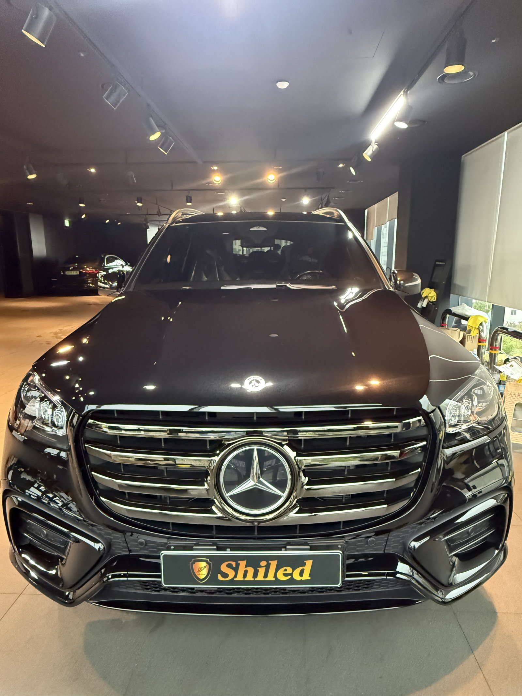
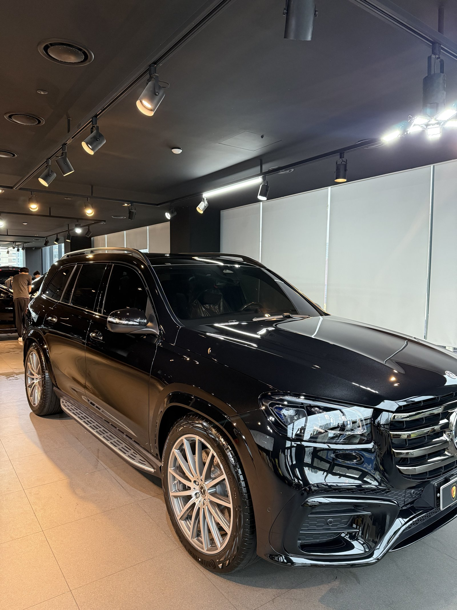
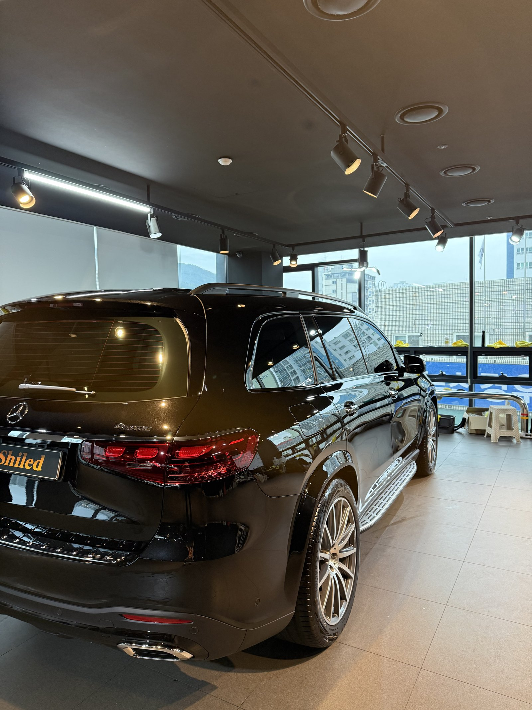
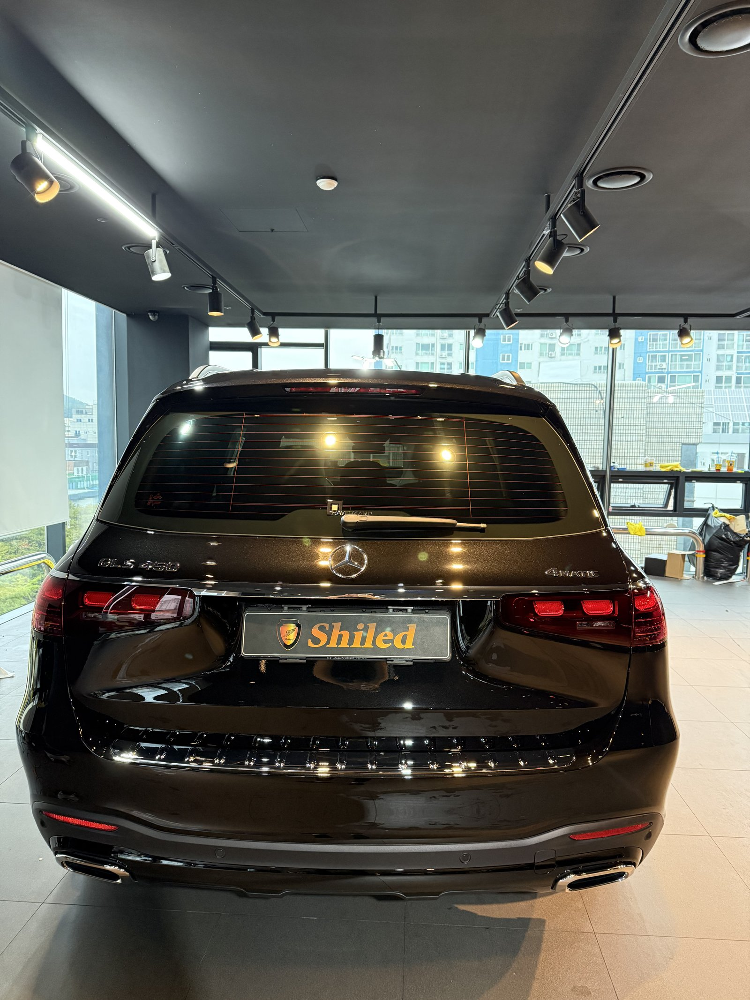
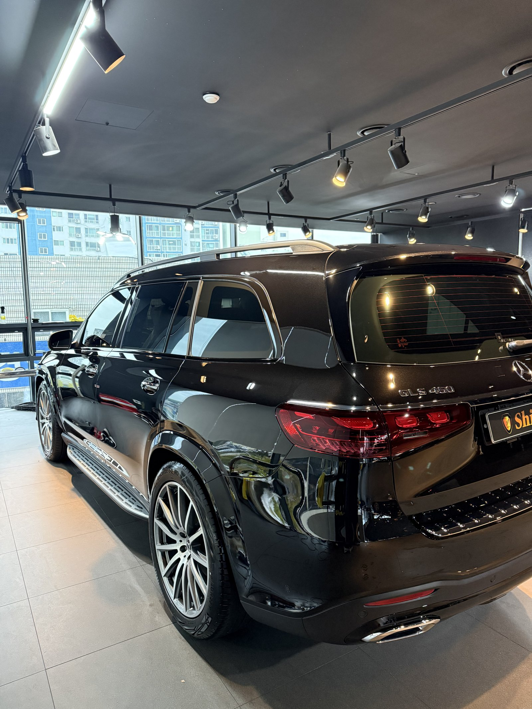
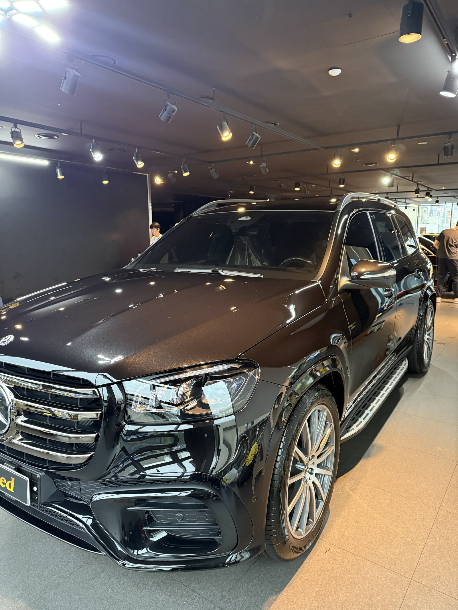
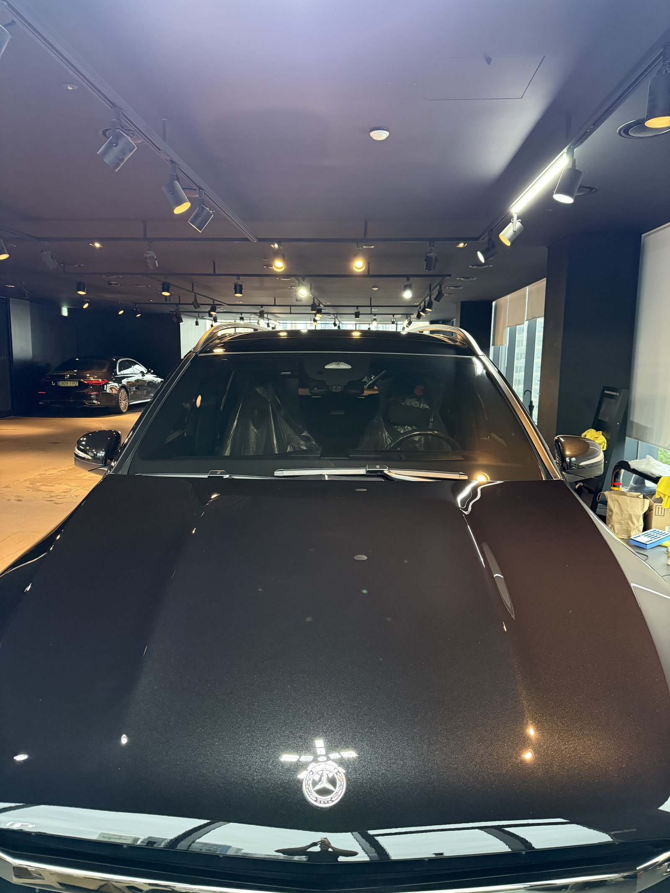
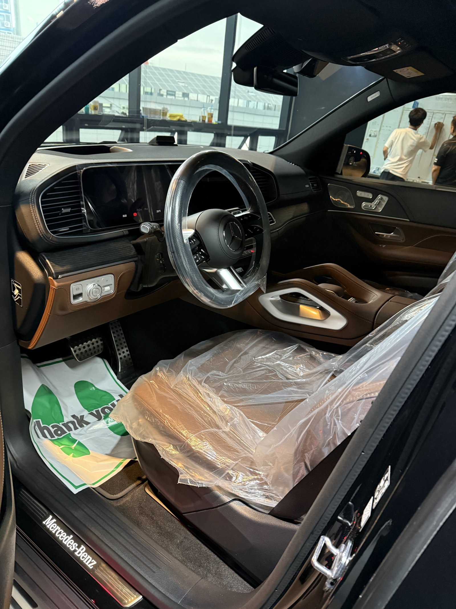
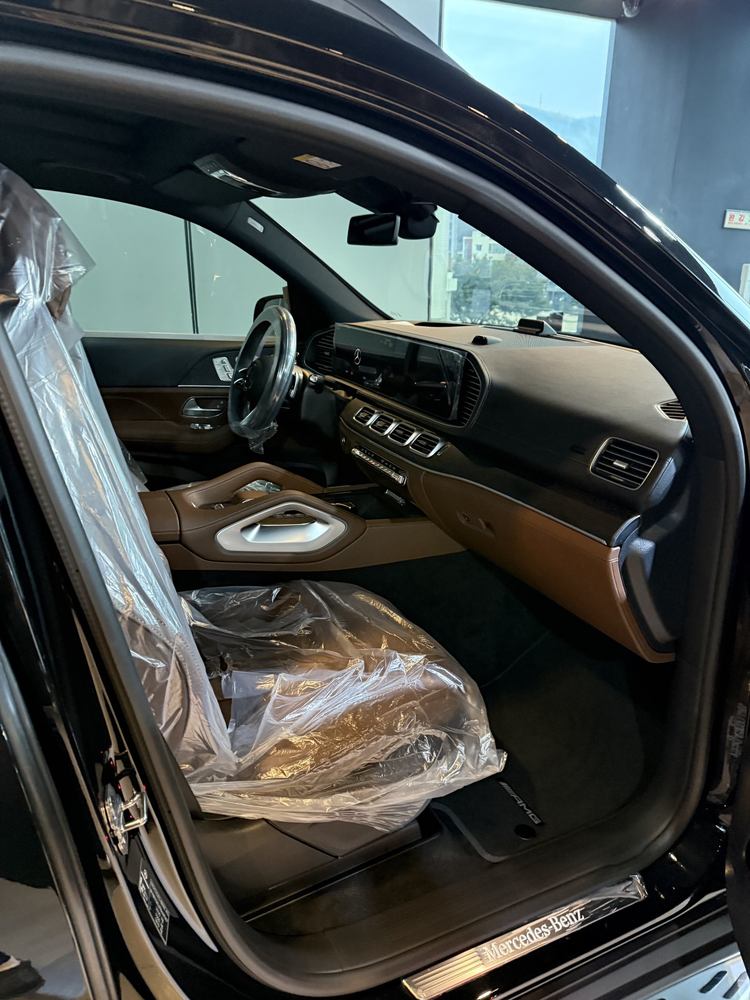
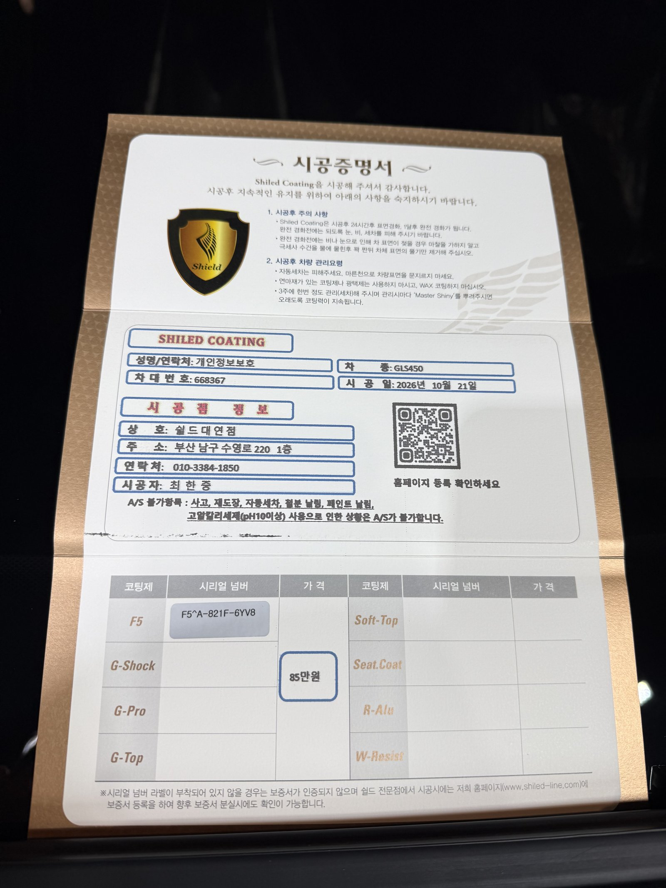

벤츠 GLS450, 검정 신차입니다.
3열 대형 SUV에 브라운 실내가 들어간 한 대입니다.
출고 전 F5로 진행한 부산 유리막코팅 기록입니다.

긴 검정 SUV는 어디를 먼저 보나요?
측면 패널 전체의 반사입니다.
GLS는 앞문부터 뒤 펜더까지 측면이 깁니다.
검정은 긴 면에서 코팅제 얼룩이 그대로 비칩니다.
조명을 측면에 비춰 패널마다 반사가 고르게 이어지는지 확인했습니다.



사이드 발판 주변은 어떻게 하나요?
GLS450은 문 아래로 사이드 발판이 붙어 있습니다.
발판과 도어 하단 사이 틈이 좁고 깊습니다.
이 자리는 코팅제가 들어가면 닦아내기 까다롭습니다.
발판 위 도어 하단 라인을 따라 따로 마무리했습니다.



기술자의 팁
사이드 발판은 신발 흙이 그대로 떨어지는 자리입니다. 세차 때 발판을 먼저 헹궈 흙을 걷어낸 뒤 도어를 닦으시면 검정 하단에 잔기스가 덜 생깁니다.
GLS450에 F5를 올린 이유
F5는 색감의 깊이와 글로시함에 특화된 코팅입니다.
검정은 F5의 장점이 가장 잘 드러나는 색입니다.
광이 올라가면 넓은 보닛과 측면에 조명이 깊게 비칩니다.
코팅제는 대표가 직접 개발·제조한 제품입니다.
이번 부산 유리막코팅은 F5 싱글로 진행했습니다.


시공증명서도 함께 드립니다
모든 시공 차량에 시공증명서를 드립니다.
차종·시공일·코팅제 시리얼 번호가 적혀 있고, 홈페이지에 등록해 보증을 받으실 수 있습니다.

차종·시공일·코팅제 시리얼이 기재된 시공증명서
자주 묻는 질문
Q. 검정 차량에 F5를 고른 이유는 무엇인가요?
A. F5는 글로시함과 색감 깊이에 특화된 코팅입니다. 검정은 광의 깊이 차이가 가장 크게 보이는 색입니다.
Q. 대형 SUV도 같은 방식으로 시공하나요?
A. 기본 공정은 같습니다. 다만 면적이 넓고 사이드 발판 같은 구조물이 있어 마무리할 자리가 더 많습니다.
Q. 브라운 실내는 따로 관리가 필요한가요?
A. 브라운 가죽은 건조와 갈라짐이 먼저 옵니다. 3열까지 사람이 자주 타신다면 시트코팅을 함께 상담해 드립니다.
Q. 왜 출고 전에 코팅하나요?
A. 도장면이 가장 깨끗할 때 올린 코팅이 가장 오래갑니다. 운행과 세차로 잔기스가 생기기 전에 입혀두는 것이 핵심입니다.
Q. 쉴드광택 위치와 예약은 어떻게 하나요?
A. 부산 남구 유엔로220 1F 쉴드광택입니다. 예약·상담은 010-3384-1850, 대표 최한중이 직접 상담하고 책임 시공합니다.
새 차일수록 시작점이 다릅니다. 가장 깨끗할 때 입혀두십시오.
제품을 직접 만드는 사람이 직접 시공합니다.
부산에서 신차 유리막코팅을 고민 중이시면 편하게 연락 주십시오.
어떤 차를 타냐보다 어떻게 타냐가 중요합니다~!
시공 중에는 전화를 받지 못할 때가 많습니다.
카카오톡으로 차종과 원하시는 시공을 남겨주시면 확인 후 답변드립니다.
쉴드광택 · 부산 남구 유엔로220 1F · 대표 최한중